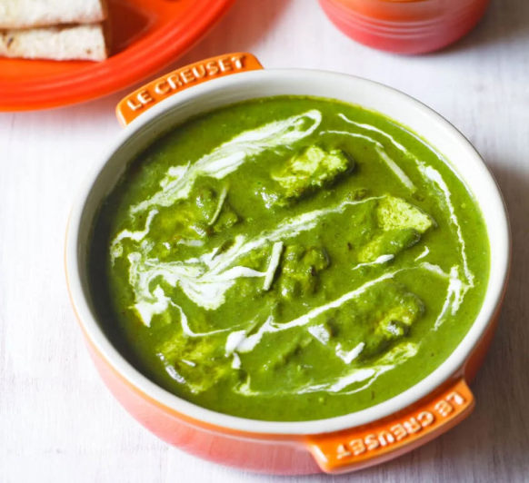

Palak Paneer

Palak Paneer is one of the most popular Indian curries around, and with good reason. This deliciously creamy
and
vibrantly green dish is made with paneer in a mildly spiced fresh spinach sauce. This is a delightful and
easy
to make vegetarian main you just have to try!I
Ingredients
- 1 Sachet MAGGI Masala
- 2 Tablespoons Oil
- 1 Teaspoon Cumin Seeds
- 2 Onion (Chopped)
- 1 Teaspoon Ginger-Garlic Paste
- 2 Tomato (Chopped)
- 500 gms Spinach
- 2 Cups Water
- 1 Pinch Salt (To Taste)
- 2 Green Chillies (Slit)
- 0.5 Teaspoon Turmeric Powder
- 1 Teaspoon Re Chilli Power
- 250 gms Paneer (Cut Into 1/2 Inch Cubes)
- 1 Inch Ginger
Steps
- Prepare ingredients as mentioned in the list.
- Boil the spinach in 1 cup of water till the leaves are wilted. Drain the water and grind the spinach leaves
into a fine paste. Keep it aside.
- Heat oil in a karahi, add cumin seeds and when they splutter add chopped onions and fry till golden brown.
Add ginger garlic paste and fry for 5 minutes. Now add the tomatoes and sauté till soft.
- Add green chillies, turmeric powder and red chilli powder. Fry for a minute, till the masalas are well
mixed.
- Add pureed spinach and the remaining 1 cup of water and MAGGI Masala ae Magic. Mix well, cover and cook for
a minute on low flame. Add the paneer pieces, mix well and simmer for 5 minutes. Add salt to taste.
- Garnish the dish with ginger juliennes. Serve hot